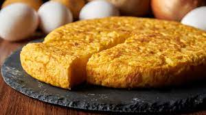

Tortilla de Patatas

La tortilla de patata, también conocida como "tortilla española" o "tortilla de papas," es un icónico plato de la cocina española que combina la simplicidad con un sabor reconfortante. Esta receta es una deliciosa y versátil mezcla de huevos, patatas y cebollas, cocida a fuego lento en una sartén para crear una tortilla gruesa y sabrosa.
Ingredientes
- Patatas: Necesitarás patatas, por lo general, se utilizan patatas de tipo harinoso como las variedades Russet o Yukon Gold. La cantidad de patatas dependerá del tamaño de la tortilla que desees hacer.
- Huevos: Se utilizan huevos para unir las patatas y cebollas y darle la consistencia característica de la tortilla.
- Cebolla: Las cebollas aportan sabor y dulzura a la tortilla. Puedes ajustar la cantidad de cebolla según tus preferencias personales.
- Aceite de oliva: Se utiliza aceite de oliva para freír las patatas y cebollas. Tradicionalmente, se utiliza aceite de oliva en abundancia para que las patatas se frían correctamente.
- Sal: La sal es necesaria para sazonar las patatas y los huevos.
Pasos
- Preparar las patatas: Pela las patatas y córtalas en rodajas finas, aproximadamente de 3-5 mm de grosor. Si lo prefieres, puedes cortarlas en cubos en lugar de rodajas. También puedes añadir cebolla cortada en rodajas finas si deseas.
- Freír las patatas y cebolla: En una sartén grande, calienta suficiente aceite de oliva para cubrir las patatas. Fría las patatas (y la cebolla, si la utilizas) a fuego medio-bajo hasta que estén tiernas, pero no doradas. Debes remover ocasionalmente para asegurarte de que se cocinen de manera uniforme. Esto puede llevar unos 20-25 minutos.
- Escurrir el exceso de aceite: Cuando las patatas estén cocidas, sácalas de la sartén y colócalas en un colador para que escurran el exceso de aceite. Puedes guardar un poco del aceite de la sartén para usarlo más adelante.
- Batir los huevos: Mientras las patatas se enfrían un poco, bate los huevos en un bol grande y sazónalos con sal al gusto.
- Mezclar las patatas con los huevos: Agrega las patatas escurridas a los huevos batidos y mézclalas bien para que estén cubiertas de huevo.
- Cocinar la tortilla: Calienta una sartén antiadherente grande a fuego medio-alto y añade un poco de aceite de oliva. Cuando esté caliente, vierte la mezcla de patatas y huevo en la sartén. Cocina a fuego medio-bajo durante unos minutos hasta que la parte inferior esté dorada y la tortilla esté firme en los bordes.
- Dar la vuelta a la tortilla: Coloca un plato grande sobre la sartén y, con cuidado, da la vuelta a la tortilla de modo que la parte cruda quede en la parte inferior. Luego, desliza la tortilla de nuevo en la sartén para cocinar el otro lado hasta que esté dorado y la tortilla esté bien cocida por dentro
- Servir: Cuando la tortilla esté cocida a tu gusto, sácala de la sartén y colócala en un plato. Déjala enfriar durante unos minutos antes de cortarla en porciones y servirla